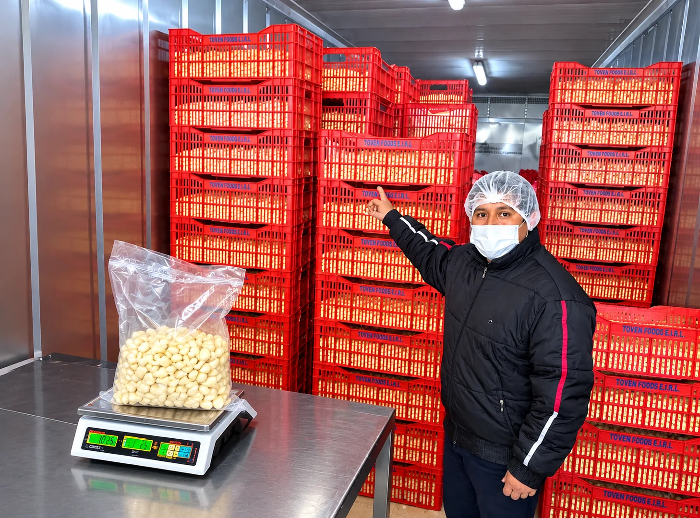

Recepción y acondicionamiento
Manejo y organización del ajo durante su acondicionamiento.
Conoce las actividades que forman parte de nuestro trabajo agroindustrial.
Manejo y organización del ajo durante su acondicionamiento.

Personal realizando labores de selección del ajo sobre mesas de trabajo.

Actividades técnicas de laboratorio relacionadas con el trabajo agroindustrial.

Preparación de cargas de ajo para su envío a clientes.
Una mirada al manejo del ajo y su distribución hacia los clientes.
